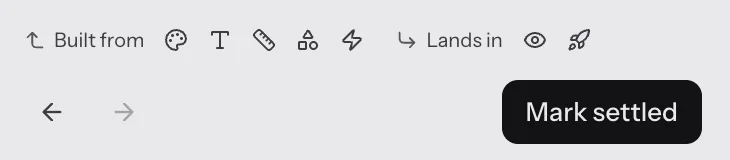

1Headings name a kind of decision: Foundations, Material, Parts, Proof. They are groups, not stages.
2A tick means I marked this area as settled. The mark can be removed at any time.
3A warning triangle means "needs another look". Something this area is built from changed after it was settled.
4The list says it in words: no order here.
5The footer is a tally: 1 settled, 1 to revisit, 6 open. It can go down as well as up, so it is not a progress bar.
6Where Back and Continue used to be, each area shows what it is built from and what it lands in.